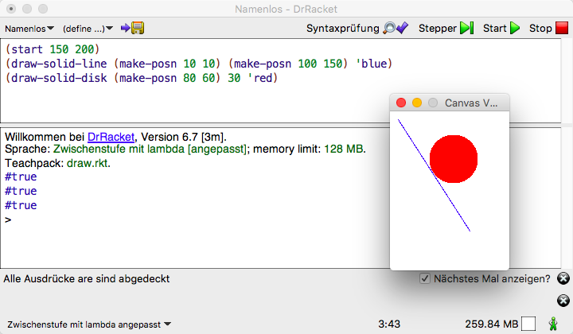
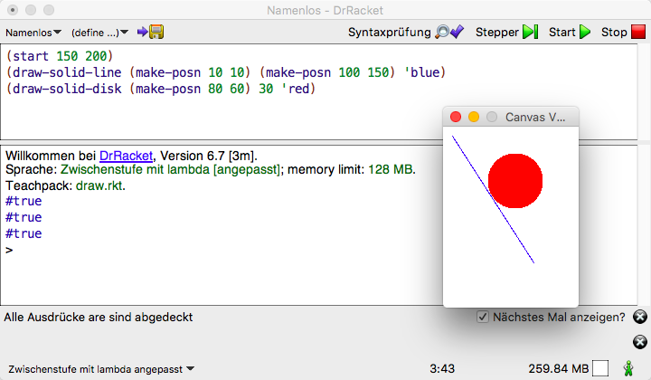

Aufgaben – ausgewählte Lösungen
Einführung in die Programmierung
Inhaltsverzeichnis
- 1. Erste Schritte in Racket
- 2. Auswertung arithmetischer Ausdrücke
- 3. Aufschreiben elementarer Funktionen
- 4. Aufschreiben elementarer Funktionen
- 5. Anwenden der Aufschreibregeln
- 6. Profit für den Kinobesitzer
- 7. Modifikation von
kino.rkt - 8. Einsatz von Hilfsfunktionen
- 9. Ersetzungsmodell
- 10. Bedingte Funktion
- 11. Zusatzaufgaben zu bedingten Funktionen
- 12. Datenabstraktion
- 13. Datenabstraktion – Zusatzaufgabe
- 14. Datenabstraktion – gemischte Daten
- 15. Datenabstraktion – gemischte Daten – Zusatzaufgabe
- 16. Listenkonstruktion und -zerlegung
- 17. Listenverarbeitung
1 Erste Schritte in Racket
Machen Sie sich mit den NORDAKADEMIE-Rechnern vertraut und richten Sie Ihren Arbeitsplatz ein (Mail, Webbrowser, Verzeichnisse für die Vorlesungen usw.).
Finden und starten Sie DrRacket nach den Anweisungen in der Vorlesung. Werten Sie einen ersten Ausdruck aus, z. B. (* 6 7).
Welche Funktion haben die Buttons? Welche Menü-Befehle verstehen Sie schon?
Schauen Sie sich in einem Webbrowser die Seiten zu Racket unter https://racket-lang.org/ an. Wo finden Sie Hilfe zur Bedienung von DrRacket? Wie können Sie sich über die Sprache Racket informieren? Wo finden Sie alle vordefinierten mathematischen Funktionen?
2 Auswertung arithmetischer Ausdrücke
- Wie wird der Ausdruck
(* (+ 2 2) (/ (* (+ 3 5) (/ 30 10)) 2))
ausgewertet? - Experimentieren Sie mit verschiedenen Operatoren und Zahlenarten.
Werten Sie die folgenden Ausdrücke aus und vergleichen Sie die Resultate:
(- 1.0 0.9) (- 1000.0 999.9) (- #i1000.0 #i999.9)
3 Aufschreiben elementarer Funktionen
Schreiben Sie für die folgenden mathematischen Formeln Racket-Funktionsdefinitionen auf:
\(n^2 + 1\)
(define fa (lambda [n] (+ (* n n) 1)))
\(\frac{1}{2}n^2 + 3\)
(define fb (lambda [n] (+ (/ (* n n) 2) 3)))
\(2 - \frac{1}{n}\)
(define fc (lambda [n] (- 2 (/ 1 n))))
Geben Sie die Racket-Funktionen in das Definitionsfenster von DrRacket ein. Geben Sie anschließend in das Interaktionsfenster Funktionsaufrufe für diese Funktionen ein.
4 Aufschreiben elementarer Funktionen
In der Praxis findet der Programmierer selten mathematische Formeln vor. Aufgabenstellungen sind eher als Prosatext gegeben. Die Berechnungsformeln muss er selbst entwickeln durch
- eigenes Nachdenken,
- Nachschlagen in geeigneten Quellen oder
- Nachfragen beim Auftraggeber.
Finden Sie für die folgenden Aufgabenstellungen die passenden Formeln und schreiben Sie diese als Funktionsdefinitionen in Racket auf:
Berechnung des Rauminhalts eines Quaders aus dessen Länge, Breite und Höhe.
(define quader-volumen (lambda [laenge breite hoehe] (* laenge breite hoehe)))
Schreiben Sie eine Funktion, die aus der Entfernung und den Geschwindigkeiten zweier Züge die Zeit ermittelt, nach der die Züge sich treffen, wenn Sie sich auf einem gemeinsamen Streckenabschnitt von ihren jeweiligen Startpunkten aus aufeinander zu bewegen.
(define zug-treffen (lambda [entfernung geschwndgkt1 geschwndgkt2] (/ entfernung (+ geschwndgkt1 geschwndgkt2))))
Berechnung der Miete, die eine Spielerin in Monopoly bezahlen muss, falls sie auf einen Bahnhof trifft, der einer anderen Spielerin gehört. Die Miete ist davon abhängig wie viele Bahnhöfe der anderen Spielerin gehören:
Anzahl der Bahnhöfe Miete 1 500 2 1000 3 2000 4 4000 Hinweis: Ein Aufruf
(expt x y)liefert \(x^y\) als Ergebnis.(define bahnhofsmiete (lambda [anzahl-bahnhoefe] (* 500 (expt 2 (- anzahl-bahnhoefe 1)))))
5 Anwenden der Aufschreibregeln
Schreiben Sie die Funktion zur Berechnung der Bahnhofsmiete in Monopoly (s. o.) gemäß den Regeln 1 bis 3 aus der Vorlesung auf.
;; berechnet die Bahnhofsmiete aus der Anzahl der Bahnhöfe (define bahnhofsmiete (lambda [anzahl-bahnhoefe] (* 500 (expt 2 (- anzahl-bahnhoefe 1))))) ;; Beispielanwendungen (= (bahnhofsmiete 4) 4000) (= (bahnhofsmiete 3) 2000) (= (bahnhofsmiete 2) 1000) (= (bahnhofsmiete 1) 500)
Wenn nichts anderes angeben ist, sind auch die Funktionen für die folgenden Aufgaben gemäß diesen Regeln aufzuschreiben!!!
6 Profit für den Kinobesitzer
Ein altmodisches Vorstadtkino besitzt eine einfache Formel für die
Berechnung des Profits einer Vorstellung: Jeder Kinobesucher
bezahlt 500 Währungseinheiten für die Eintrittskarte. Jede
Vorstellung kostet das Kino 2000 Währungseinheiten plus 50
Währungseinheiten pro Besucher. Schreiben Sie eine Funktion profit zur
Berechnung des Profits bei gegebener Besucherzahl.
;; berechnet den Profit eine Filmvorfuehrung aus 2000 WE Fixkosten ;; und 50 WE Kosten pro Besucher bei gegebener Besucherzahl und ;; 500 WE Kartenpreis (define profit (lambda [besucherzahl] (- (* 500 besucherzahl) (+ (* 50 besucherzahl) 2000)))) ;; Beispielanwendungen (= (profit 100) 43000)
7 Modifikation von kino.rkt
- Modifizieren Sie das Programm
kino.rktso, dass die Fixkosten einer Veranstaltung wegfallen und dafür 15 Währungseinheiten pro Besucher an Kosten anfallen. - Nehmen Sie die gleiche Modifikation auch an der Funktion
profitaus der Vorlesung vor, die ohne Hilfsfunktionen auskommt, und vergleichen Sie die Ergebnisse.
8 Einsatz von Hilfsfunktionen
Die folgenden Aufgaben sind unter Benutzung von Hilfsfunktionen zu lösen. Befolgen Sie unbedingt alle in der Vorlesung angegebenen Regeln:
- Schreiben Sie ein Programm, das das Volumen eines Zylinders zu berechnen erlaubt. Eingangsgrößen sind der Radius und die Höhe des Zylinders.
- Schreiben Sie ein Programm, das die Oberfläche eines Zylinders zu berechnen erlaubt. Eingangsgrößen sind der Radius und die Höhe des Zylinders.
- Schreiben Sie ein Programm, das die Oberfläche eines Rohrs zu berechnen erlaubt. Eingangsgrößen sind der Innenradius, die Wandstärke und die Länge des Rohrs.
;;;;;;;;;;;;;;;;;;;;;;;;;;;;;;;;;;;;;;;;;;; ;;;;; Lösung von Simon Greßmann, I18b ;;;;; ;;;;;;;;;;;;;;;;;;;;;;;;;;;;;;;;;;;;;;;;;;; ;Aufgabe 8a (define mein-pi 3.14) ;Berechnet Kreisfläche aus Radius (define Kreisflaeche (lambda [radius] (* radius radius mein-pi))) (= (Kreisflaeche 1) 3.14) (= (Kreisflaeche 2) 12.56) ;Berechnet das Volumen eines Zylinders in Abhängigkeit von Radius und Höhe (define Zylindervolumen (lambda [willi hoehe] (* (Kreisflaeche willi) hoehe))) (= (Zylindervolumen 1 1) 3.14) ;Aufgabe 8b ;Berechnet den Umfang eines Kreises in Anhängigkeit von Pi. (define Kreisumfang (lambda [radius] (* 2 mein-pi radius))) (= (Kreisumfang 1) 6.28) ;Berechnet die Mantelfläche eines Zylinders in Abhängigkeit von Radius ;und Höhe (define Mantelflaeche (lambda (radius hoehe) (* (Kreisumfang radius) hoehe))) (= (Mantelflaeche 1 1) 6.28) (= (Mantelflaeche 2 1) 12.56) ;Berechnet die Oberfläche eines Zylinders in Abhängigkeit von Radius und Höhe (define Zylinderoberflaeche (lambda [radius hoehe] (+ (* 2 (Kreisflaeche radius)) (Mantelflaeche radius hoehe)))) (= (Zylinderoberflaeche 1 1) 12.56) ;Aufgabe 8c ;Berechnet die Fläche eines Kreisrings in Abhängigkeit von innenradius und ;Breite (define Kreisringflaeche (lambda [innenradius breite] (- (Kreisflaeche (+ innenradius breite)) (Kreisflaeche innenradius)))) (= (Kreisringflaeche 1 1) 9.42) ;Berechnet die Oberfläche eines Rohrs in Abhängigkeit von dessen Inneradius, ;Wandstärke und Länge. (define Rohroberflaeche (lambda [innenradius wandstaerke laenge] (+ (Mantelflaeche (+ innenradius wandstaerke) laenge) (Mantelflaeche innenradius laenge) (* 2 (Kreisringflaeche innenradius <dstaerke))))) (= (Rohroberflaeche 1 1 1) 37.68)
9 Ersetzungsmodell
Gegeben sei die folgende Funktionsdefinition:
(define f (lambda [x y] (+ (* 3 x) (* y y))))
Werten Sie die folgenden Ausdrücke Schritt für Schritt unter Anwendung des Ersetzungsmodells aus:
(f 1 (* 2 3))(f 1 (* 2 3)) = ((lambda [x y] (+ (* 3 x) (* y y))) 1 (* 2 3)) = ((lambda [x y] (+ (* 3 x) (* y y))) 1 6) = (+ (* 3 1) (* 6 6)) = (+ 3 36) = 39
(+ (f 1 2) (f 2 1))(+ (f 1 2) (f 2 1)) = (+ ((lambda [x y] (+ (* 3 x) (* y y))) 1 2) ((lambda [x y] (+ (* 3 x) (* y y))) 2 1)) = (+ (+ (* 3 1) (* 2 2)) (+ (* 3 2) (* 1 1))) = (+ (+ 3 4) (+ 6 1)) = (+ 7 7) = 14
Ausführlich:
(+ (f 1 2) (f 2 1)) = (+ ((lambda [x y] (+ (* 3 x) (* y y))) 1 2) (f 2 1)) = (+ ((lambda [x y] (+ (* 3 x) (* y y))) 1 2) ((lambda [x y] (+ (* 3 x) (* y y))) 2 1)) = (+ (+ (* 3 1) (* 2 2)) (+ ((lambda [x y] (+ (* 3 x) (* y y))) 2 1)) = (+ (+ (* 3 1) (* 2 2)) (+ (* 3 2) (* 1 1))) = (+ (* 3 4) (+ (* 3 2) (* 1 1))) = (+ (+ 3 4) (+ 6 1)) = (+ 7 (+ 6 1)) = (+ 7 7) = 14
(f (f 1 (* 2 3)) 19)(f (f 1 (* 2 3)) 19) = ((lambda [x y] (+ (* 3 x) (* y y))) (f 1 (* 2 3)) 19) = ((lambda [x y] (+ (* 3 x) (* y y))) ((lambda [x y] (+ (* 3 x) (* y y))) 1 (* 2 3)) 19) = ((lambda [x y] (+ (* 3 x) (* y y))) ((lambda [x y] (+ (* 3 x) (* y y))) 1 6) 19) = ((lambda [x y] (+ (* 3 x) (* y y))) (+ (* 3 1) (* 6 6)) 19) = ((lambda [x y] (+ (* 3 x) (* y y))) (+ 3 36) 19) = ((lambda [x y] (+ (* 3 x) (* y y))) 39 19) = (+ (* 3 39) (* 19 19)) = (+ 117 361) = 478
Als Alternative hier noch eine Schreibarbeit sparende Lösung von Alessandra Blank:
; Nebenrechnung für x: sei x = (f 1 (* 2 3)) x = (f 1 6) = ((lambda [x y] (+ (* 3 x) (* y y))) 1 6) = (+ (* 3 1) (* 6 6) = (+ 3 36) x = 39 (f 39 19) = ((lambda [x y] (+ (* 3 x) (* y y))) 39 19) = (+ (* 3 39) (* 19 19)) = (+ 117 361) = 478
10 Bedingte Funktion
Schreiben Sie ein Programm, das aus dem Bruttoeinkommen eines Arbeitnehmers, das sich aus der Anzahl der Arbeitsstunden und seinem Bruttostundenlohn ergibt, sein Nettoeinkommen durch Abzug der Einkommensteuer berechnet. Die Einkommensteuer wird dabei nach einem steuererklärungaufbierdeckelgeeigneten Tarif ermittelt, der folgendermaßen definiert ist:
| Einkommen | Steuersatz [%] |
|---|---|
| \(<= 5000\) | 0 |
| \(> 5000\; und \leq 10000\) | 15 |
| \(>10000\; und \leq 100000\) | 29 |
| \(>100000\) | 64 |
Der Steuersatz gilt immer nur für die Einkommensanteile in dem jeweiligen Intervall.
Die Funktion nettoeinkommen soll nach folgendem Schema aufrufbar sein:
(nettoeinkommen anzahl-arbeitsStunden stundenLohn)
Hier noch ein paar Testvorgaben:
;; Beispielanwendungen (= (nettoeinkommen 1 5001) 5000.85) (= (nettoeinkommen 1 10001) 9250.71) (= (nettoeinkommen 1 100001) 73150.36)
Hinweise:
- Lesen Sie den Aufgabentext aufmerksam durch. Jeder Satz bedeutet etwas.
- Entwickeln Sie die Funktion gemäß den Regel 1 bis 6. Benutzen Sie Hilfsfunktionen und machen von Variablendefinitionen (benannte Konstanten, Regel 5) Gebrauch.
;; Steuertabelle gemäß Aufgabenstellung (define steuergrenzeI 5000) (define steuergrenzeII 10000) (define steuergrenzeIII 100000) (define steuersatz1 0) (define steuersatz2 15/100) (define steuersatz3 29/100) (define steuersatz4 64/100) ;; feste Steuerbeträge gemäß obiger Tabelle (define steuern-fuer-steuergrenzeI (* steuersatz1 steuergrenzeI)) (define steuern-fuer-steuergrenzeII (+ steuern-fuer-steuergrenzeI (* steuersatz2 (- steuergrenzeII steuergrenzeI)))) (define steuern-fuer-steuergrenzeIII (+ steuern-fuer-steuergrenzeII (* steuersatz3 (- steuergrenzeIII steuergrenzeII)))) ;; Ermittlung des Einkommenssteuersatzes aus dem Einkommen gemäß obiger Tabelle (define steuersatz (lambda [einkommen] (cond [(and (<= einkommen steuergrenzeI) (>= einkommen 0)) steuersatz1] [(and (> einkommen steuergrenzeI) (<= einkommen steuergrenzeII)) steuersatz2] [(and (> einkommen steuergrenzeII) (<= einkommen steuergrenzeIII)) steuersatz3] [(> einkommen steuergrenzeIII) steuersatz4]))) ;; Beispielanwendungen "steuersatz" (= (steuersatz 2000) 0) (= (steuersatz steuergrenzeI) 0) (= (steuersatz 7500) 15/100) (= (steuersatz steuergrenzeII) 15/100) (= (steuersatz 50000) 29/100) (= (steuersatz steuergrenzeIII) 29/100) (= (steuersatz 1000000) 64/100) ;; Berechnung des Bruttoeinkommens eines Arbeitnehmers ;; der Anzahl der Arbeitsstunden und dem Bruttostundenlohn (define bruttoeinkommen (lambda [arbeitsstunden stundenlohn] (* arbeitsstunden stundenlohn))) ;; Beispielanwendungen "bruttoeinkommen" (= (bruttoeinkommen 10 5) 50) ;; Ermittlung der Einkommensteuer aus dem einkommen ;; gemäß Steuertarif in Aufgabenstellung (define einkommensteuer (lambda [einkommen] (cond [(= (steuersatz einkommen) steuersatz1) (* steuersatz1 einkommen)] [(= (steuersatz einkommen) steuersatz2) (+ steuern-fuer-steuergrenzeI (* steuersatz2 (- einkommen steuergrenzeI)))] [(= (steuersatz einkommen) steuersatz3) (+ steuern-fuer-steuergrenzeII (* steuersatz3 (- einkommen steuergrenzeII)))] [(= (steuersatz einkommen) steuersatz4) (+ steuern-fuer-steuergrenzeIII (* steuersatz4 (- einkommen steuergrenzeIII)))]))) ;; Beispielanwendungen "einkommensteuer" (= (einkommensteuer 2000) 0) (= (einkommensteuer steuergrenzeI) 0) (= (einkommensteuer 8000) 450) (= (einkommensteuer steuergrenzeII) 750) (= (einkommensteuer 50000) 12350) (= (einkommensteuer steuergrenzeIII) 26850) (= (einkommensteuer 100100) (+ 26850 64)) ;; Berechnung des Nettolohns eines Arbeitnehmers aus ;; Anzahl Arbeisstunden und Bruttostundenlohn (in Euro) (define nettoeinkommen (lambda [arbeitsstunden stundenlohn] (- (bruttoeinkommen arbeitsstunden stundenlohn) (einkommensteuer (bruttoeinkommen arbeitsstunden stundenlohn))))) ;; Beispielanwendungen "nettoeinkommen" (= (nettoeinkommen 1 5001) (/ 500085 100)) (= (nettoeinkommen 1 10001) (/ 925071 100)) (= (nettoeinkommen 1 100001) (/ 7315036 100))
11 Zusatzaufgaben zu bedingten Funktionen
Eine Kreditkartengesellschaft gewährt ihren Kunden nach Jahresumsatz gestaffelte Rückerstattung von Kreditkartenbelastungen. Die Rückerstattungen könnten z. B. wie folgt aussehen:
- ein viertel Prozent für die ersten 500€ des Jahresumsatzes (nur Belastungen keine Gutschriften werden gezählt),
- ein halbes Prozent für die nächsten 1000€, d. h. für den Umsatzanteil zwischen 500€ und 1500€,
- ein dreiviertel Prozent für die nächsten 1000€, d. h. für den Umsatzanteil zwischen 1500€ und 2500€ und
- ein Prozent für die Umsatzanteile oberhalb von 2500€.
Ein Kunde mit einem Umsatz von 400€ erhält demnach eine Gutschrift von 1€ (\(= \frac{1}{4} \cdot \frac{1}{100} \cdot 400\)). Ein Kunde mit einem Umsatz von 1400€ erhält eine Gutschrift von 5,75€:
- 1,25€ (\(= \frac{1}{4} \cdot \frac{1}{100} \cdot 500\)) für die ersten 500€ plus
- 4,50€ (\(=\frac{1}{2} \cdot \frac{1}{100} \cdot 900\)) für die nächsten 900€
Lösen Sie die folgenden Teilaufgaben
- Bestimmen Sie manuell die Gutschriften für Umsätze 2000€ und 2600€.
- Schreiben Sie eine Funktion
rueckerstattung, die einen Umsatz als Argument akzeptiert und den Rückerstattungsbetrag ermittelt.
;; berechnet die Rückerstattung für Umsätze zwischen 0 and 500 (define rueckerstattung-0-500 (lambda [a] (* a (* .25 1/100)))) ;; Beispielanwendungen (= (rueckerstattung-0-500 400) 1) ;; berechnet die Rückerstattung für Umsätze zwischen 500 and 1500 (define rueckerstattung-500-1500 (lambda [a] (+ (rueckerstattung-0-500 500) (* (- a 500) (* .50 1/100))))) ;; Beispielanwendungen (= (rueckerstattung-500-1500 1400) 5.75) ;; berechnet die Rückerstattung für Umsätze zwischen 1500 and 2500 (define rueckerstattung-1500-2500 (lambda [a] (+ (rueckerstattung-500-1500 1500) (* (- a 1500) (* .75 1/100))))) ;; Beispielanwendungen (= (rueckerstattung-1500-2500 2000) 10.00) ;; berechnet die Rückerstattung für Umsätze von 2500 und höher (define rueckerstattung-2500+ (lambda [a] (+ (rueckerstattung-1500-2500 2500) (* (- a 2500) (* 1 1/100))))) ;; Beispielanwendungen (= (rueckerstattung-2500+ 2600) 14.75) ;; berechnet Rückerstattungsbetrag für Kreditkarteninhaber ;; bei einem bestimmten Jahresumsatz (define rueckerstattung (lambda [umsatz] (cond [(<= umsatz 500) (rueckerstattung-0-500 umsatz)] [(and (> umsatz 500) (<= umsatz 1500)) (rueckerstattung-500-1500 umsatz)] [(and (> umsatz 1500) (<= umsatz 2500)) (rueckerstattung-1500-2500 umsatz)] [else (rueckerstattung-2500+ umsatz)]))) ;; Beispielanwendungen (= (rueckerstattung 400) 1) (= (rueckerstattung 1400) 5.75) (= (rueckerstattung 2000) 10.00) (= (rueckerstattung 2600) 14.75)
Wieviele reelle Lösungen besitzt eine quadratische Gleichung \[ax^2 + bx + c = 0\] für beliebige Koeffizienten \(a\), \(b\) und \(c\)?
- Betrachten Sie zunächst nur echte quadratische Gleichungen, d. h. es gilt \(a\neq0\)
- Erweitern Sie die Lösung so, dass auch der Fall \(a=0\) korrekt behandelt wird.
Lösung: Die Lösungen der quadratischen Gleichung \[ax^2 + bx + c = 0\] können für den Fall \(a\neq 0\) mit der Formel \[L_{q}: x_{1,2}=\frac{-b\pm\sqrt{b^2-4ac}}{2a}\] berechnet werden. Für den Fall \(a=0\) gibt es eine Lösung \(-c/b\), vorausgesetzt \(b\neq 0\).
;; berechnet der Radikanden der Lösungsformel (define radikand (lambda [a b c] (- (sqr b) (* 4 a c)))) ;: Beispielanwendungen (= (radikand 1 2 1) 0) (= (radikand 1 1 1) -3) (= (radikand 1 3 1) 5) ;; berechnet die Anzahl der Lösungen einer quadratischen Gleichung mit ;; den Koeffizienten a, b und c (define anzahl-loesungen (lambda [a b c] (cond [(= 0 a) (cond [(= 0 b c) "unendlich viele Lösungen"] [(and (= 0 b) (not (= 0 c))) "keine Lösung"] [else "eine Lösung"])] [else (cond [(> (radikand a b c) 0) "zwei Lösungen"] [(= (radikand a b c) 0) "eine Lösung"] [else "keine Lösung"])]))) ;; Beispielanwendugen (string=? (anzahl-loesungen 0 0 0) "unendlich viele Lösungen") (string=? (anzahl-loesungen 0 0 1) "keine Lösung") (string=? (anzahl-loesungen 0 1 2) "eine Lösung") (string=? (anzahl-loesungen 1 4 1) "zwei Lösungen") (string=? (anzahl-loesungen 1 2 1) "eine Lösung") (string=? (anzahl-loesungen 4 1 1) "keine Lösung") ;;;;;;;;;;;;;;;;;;;;;;;;;;;;;;;;;;;;;;;;;;;;;;;;;;;;;;;;;;;;;;;;;;;;;;;;; ;;; Funktion zur Berechnung der Lösungen einer quadratischen Gleichung;;; ;;;;;;;;;;;;;;;;;;;;;;;;;;;;;;;;;;;;;;;;;;;;;;;;;;;;;;;;;;;;;;;;;;;;;;;;; ;; Eine quadgl-loesung ist ein Wert ;; (make-quadgl-loesung art x1 x2) ;; wobei art die Anzahl der Lösungen durch eine Zeichenkette ;; ("trivial" "keine" "eine" "zwei") repräsentiert wird und ;; x1, x2 ggf. die Lösungen enthalten (define-struct quadgl-loesung [art x1 x2]) ;; berechnet die Lösungen einer quadratischen Gleichung mit ;; den Koeffizienten a, b und c (define loesungen (lambda [a b c] (cond [(= 0 a) (cond [(= 0 b c) (make-quadgl-loesung "trivial" 0 0)] [(and (= 0 b) (not (= 0 c))) (make-quadgl-loesung "keine" 0 0)] [else (make-quadgl-loesung "eine" (/ (- c) b) 0)])] [else (cond [(> (radikand a b c) 0) (make-quadgl-loesung "zwei" (/ (+ (- b) (sqrt (radikand a b c))) (* 2 a)) (/ (- (- b) (sqrt (radikand a b c))) (* 2 a)))] [(= (radikand a b c) 0) (make-quadgl-loesung "eine" (/ (- b) (* 2 a)) 0)] [else (make-quadgl-loesung "keine" 0 0)])]))) ;; Beispielanwendugen (string=? (quadgl-loesung-art (loesungen 0 0 0)) "trivial") (string=? (quadgl-loesung-art (loesungen 0 0 1)) "keine") (and (string=? (quadgl-loesung-art (loesungen 0 1 2)) "eine") (= (quadgl-loesung-x1 (loesungen 0 1 2)) -2)) (and (string=? (quadgl-loesung-art (loesungen 1 4 3)) "zwei") (= (quadgl-loesung-x1 (loesungen 1 4 3)) -1) (= (quadgl-loesung-x2 (loesungen 1 4 3)) -3)) (and (string=? (quadgl-loesung-art (loesungen 1 2 1)) "eine") (= (quadgl-loesung-x1 (loesungen 1 2 1)) -1)) (string=? (quadgl-loesung-art (loesungen 4 1 1)) "keine")
12 Datenabstraktion
Befolgen Sie für die Lösung der Aufgabe die Regeln 7 und 8!
Definieren Sie eine Datenstruktur für „Zeitpunkte seit Mitternacht”, die aus den Komponenten
stunden,minutenundsekundenbesteht.Entwickeln Sie eine Funktion
zeit->sekunden, die eine Zeitpunkt-seit-Mittnacht-Struktur verarbeitet und die seit Mitternacht vergangenen Sekunden berechnet.Definieren Sie geeignete Datenstrukturen für Kreise, die durch
- die Koordinaten des Mittelpunkts und
- den Radius
gegeben sind.
Schreiben Sie eine Funktion, die prüft, ob ein Punkt innerhalb eines Kreises liegt.
; Autor der Lösungen zu Aufgabe 12: David Lüder (I16b) ; Aufgabe 12a ; Eine Tageszeit ist ein Wert ; (make-daytime h m s) ; wobei h die Stunden, m die Minuten und s die Sekunden angeben, ; um die Uhrzeit zu definieren. (define-struct daytime [h m s]) ; gibt die absolute Zahl der vergangenen Sekunden seit Mitternacht ; bei gegebeher Tageszeit zurück. (check-expect (zeit->sekunden (make-daytime 0 0 0)) 0) (check-expect (zeit->sekunden (make-daytime 0 2 36)) 156) (check-expect (zeit->sekunden (make-daytime 2 1 50)) 7310) (check-expect (zeit->sekunden (make-daytime 23 59 59)) 86399) (define zeit->sekunden (lambda [uhrzeit] (+ (* (daytime-h uhrzeit) 3600) (* (daytime-m uhrzeit) 60) (daytime-s uhrzeit)))) ; Aufgabe 12b ; Ein Punkt ist ein Wert ; (make-point x y) ; wobei x und y Zahlen sind, welche die Position im Zweidimensionalen ; angeben. (define-struct point [x y]) ; Ein Kreis ist ein Wert ; (make-circle center radius) ; wobei center ein Punkt ist, welcher den Mittelpunkt darstellt und radius ; eine Zahl ist, welche den Radius des Kreises angibt. (define-struct circle [center radius]) ; berechnet den Abstand zwischen zwei übergebenen Punkten im Zweidimensionalen (check-expect (point-distance (make-point 1 1) (make-point 1 2)) 1) (check-expect (point-distance (make-point 7 2) (make-point 2 2)) 5) (check-within (point-distance (make-point 5 5) (make-point 2 4)) 3.16 3.17) (define point-distance (lambda [p1 p2] (sqrt (+ (sqr (- (point-x p1) (point-x p2))) (sqr (- (point-y p1) (point-y p2))))))) ; prüft, ob ein Punkt innerhalb eines Kreises liegt, dabei werden der Kreis ; und der Punkt übergeben (check-expect (in-circle? (make-circle (make-point 10 10) 2) (make-point 10 9)) #true) (check-expect (in-circle? (make-circle (make-point 7 3) 5) (make-point 2 2)) #false) (check-expect (in-circle? (make-circle (make-point 9 2) 7) (make-point 8 4)) #true) (define in-circle? (lambda [circle point] (<= (point-distance (circle-center circle) point) (circle-radius circle))))
Definieren Sie eine Datenstruktur für Gäste einer Veranstaltung. Ein Gast besteht aus einer Zeichenkette für den Namen, einem boolschen Wert, der angibt ob es sich um eine Frau handelt, und einem boolschen Wert, der angibt ob es sich um einen Vegetarier handelt.
Schreiben Sie eine Funktion, die prüft, ob ein Gast ein nicht weiblicher Vegetarier ist.
; Ein Gast besteht aus ; - einer Zeichenkette für den Namen ; - einem boolschen Wert, der angibt ob es sich um eine Frau handelt ; - einem boolschen Wert, der angibt ob es sich um einen Vegetarier handelt (define-struct gast [name weiblich? vegetarier?]) ;; prüft, ob ein Gast ein nicht weiblicher Vegetarier ist (define nicht-weiblicher-vegetarier? (lambda [gast] (and (not (gast-weiblich? gast)) (gast-vegetarier? gast)))) ;; Beispielanwendungen (nicht-weiblicher-vegetarier? (make-gast "Karl" #false #true)) (not (nicht-weiblicher-vegetarier? (make-gast "Klara" #true #true))) (not (nicht-weiblicher-vegetarier? (make-gast "Karl" #false #false)))
13 Datenabstraktion – Zusatzaufgabe
13.1 Vorbemerkungen
In den Lehrsprachen von DrRacket gibt es ein vordefinierte
Strukturdefinition namens posn für Punkte in der Ebene, die genauso
aufgebaut ist wie die Strukturdefinition point aus der
Vorlesung. Die damit vordefinierten Funktionen sind
- die Konstruktionsfunktion
make-posn, - die Selektionsfunktionen
posn-xundposn-yund - das Typprädikat
posn?.
Wenn man über den Menüpunkt Sprache->Teachpack hinzufügen... das
Teachpack draw.rkt auswählt und anschließend den Start-Knopf
drückt, steht ein Grafikpaket mit den folgenden Funktionen bereit:
draw-solid-line- erwartet zwei Punkte (
posn-Strukturen), die den Anfang und das Ende einer Strecke definieren sowie eine Farbe als Argumente draw-solid-rect- erwartet vier Argumente: ein Punkt für die linke obere Ecke des Rechtecks, zwei Zahlen für Breite und Höhe des Rechecks und eine Farbe
draw-solid-disk- erwartet drei Argumente: ein Punkt für den Mittelpunkt, eine Zahl für den Radius der Scheibe und eine Farbe
draw-circle- erwartet drei Argumente: ein Punkt für den Mittelpunkt, eine Zahl für den Radius des Kreises und eine Farbe
Alle Funktionen liefern als Funktionswert true, wobei wir in diesem Fall
an den Funktionswerten weniger interessiert sind als an ihrem
Effekt. Der besteht nämlich darin, dass die Prozeduren jeweils eine
Strecke, ein Rechteck, eine Scheibe und einen Kreis auf eine zuvor
definierte Zeichenfläche zeichnen.
Eine Zeichenfläche kann mit einem Ausdruck (start x y) erzeugt
werden, wobei x und y die Breite und die Höhe in Pixeln der
Zeichenfläche angeben. Zum Beispiel erzeugt ein Aufruf (start 150
200) die folgende Zeichenfläche:  Ein
Anwendungsbeispiel zeigt die folgende Abbildung:

Ein
Anwendungsbeispiel zeigt die folgende Abbildung:

Der Ursprung des Koordinatensystems liegt in der linken oberen Ecke
der Zeichenfläche. Die x-Koordinate zählt nach rechts, die
y-Koordinate nach unten positiv:

Die Farben werden durch Symbole wie 'yellow, 'red, 'green
angegeben. Bitte beachten Sie das vorangestellte Hochkomma.
Für jede Zeichenoperation gibt es eine korrespondierende
Löschoperation: clear-solid-line, clear-solid-rect,
clear-solid-disk und clear-circle. Wenn diese Funktionen mit den
gleichen Argumenten wie zuvor die zugehörigen draw-Operationen aufgerufen
werden, werden die entsprechenden Figuren von der Zeichenfläche
entfernt.
Um mehrere Zeichenoperationen hintereinander ausführen zu
können, d. h. mehrere Effekte zu kombininieren, macht man davon
Gebrauch, dass die einzelnen Zeichenoperationen #true als Resultat
liefern. Dadurch ist es möglich mehrere Zeichenoperationen
hintereinander auszuführen, indem man sie in eine Und-Verknüpfung
einschließt:
(and exp1 exp2)
Dieser Ausdruck bewirkt, dass man zuerst den Effekt von exp1 und
anschließend den von exp2 zu sehen bekommt.
Mit (stop) wird die Zeichenfläche geschlossen.
13.2 Aufgabenstellungen
- Experimentieren Sie mit den o. g. Funktionen.
- Kreise und Rechtecke bewegen
- Entwickeln Sie eine Datenstruktur
circlefür farbige Kreise. Diese sollen durch drei Komponenten definiert sein: den Mittelpunkt, den Radius und die Farbe des Umfangs. - Schreiben Sie die Datendefinition für Kreise und die Funktionsschablone (gemäß Regeln 7 und 8) für Kreise verarbeitende Funktionen.
- Benutzen Sie die Schablone für die Entwicklung einer Funktion
draw-a-circle. Die Funktion erwartet einen Kreis (circle) als Argument und zeichnet ihn auf einer Zeichenfläche. Der Funktionswert sollte#truesein. - Entwickeln Sie eine Funktion
translate-circlemit einercircle-Strukturcund einerposn-Strukturdeltaals Parameter. Die Funktion liefert einencircleals Resultat, dessen Mittelpunkt gegenüber dem voncum den x-Wert vondeltanach rechts und um den y-Wert vondeltanach unten verschoben ist. Die Funktion hat keinen Effekt auf der Zeichenfläche. - Schreiben Sie eine Funktion
clear-a-circle, die einen Kreis von der Zeichenfläche entfernt. Schreiben Sie eine Funktion
draw-and-clear-circle, die einecircle-Struktur zeichnet, eine kurze Zeit wartet und sie anschließend wieder entfernt. Für die Implementierung der Wartezeit steht die Prozedursleep-for-a-whilezur Verfügung. Der Aufruf
(sleep-for-a-while 3)erzeugt eine Wartezeit von drei Sekunden. Der Funktionswert ist#true.Die Funktion
;; zeichnet und löscht einen Kreis a-circle und ;; bewegt ihn um a-posn (define move-circle (lambda [a-posn a-circle] (cond [(draw-and-clear-circle a-circle) (translate-circle a-circle a-posn)] [else a-circle])))
zeichnet und löscht einen Kreis auf der Zeichenfläche und erzeugt anschließend einen (verschobenen) Kreis, so dass eine erneute Zeichenoperation den Kreis an einer neuen Position erscheinen lässt.
Zum Beispiel bewegt der Ausdruck
(draw-a-circle (move-circle (make-posn 10 0) (move-circle (make-posn 10 0) (move-circle (make-posn 10 0) (make-circle (make-posn 10 50) 10 'green)))))
einen grünen Kreis dreimal um 10 Pixel nach rechts. Der äußere Aufruf von
draw-a-circlesorgt dafür, dass auch die letzte Position des Kreises angezeigt wird.Das sei nur ein kleine Anregung für eigene „Animationen“.
- Entwickeln Sie eine Datenstruktur
;; A circle is a structure: ;; (make-circle P R C) ;; where P is a posn describing the center of the circle, ;; R is a number describing the radius of the circle, ;; and C is a color. (define-struct circle [center radius color]) #| ;; Funktionsschablone für circle-verarbeitende Funktionen (define fun-for-circles (lambda [a-circle] ... (circle-center a-circle) ... ... (circle-radius a-circle) ... ... (circle-color a-circle) ...)( |# ;; draws the disk on the screen ;; no tests, because function always returns true (define draw-a-circle (lambda [c] (draw-circle (circle-center c) (circle-radius c) (circle-color c)))) ;; EXAMPLES (start 300 300) (draw-a-circle (make-circle (make-posn 50 50) 50 'red)) ;; determines if p is inside the circle c. (check-expect (in-circle? (make-circle (make-posn 6 5) 1 'blue) (make-posn 6 5)) #true) (check-expect (in-circle? (make-circle (make-posn 6 5) 1 'green) (make-posn 5.5 5)) #true) (check-expect (in-circle? (make-circle (make-posn 6 5) 1 'yellow) (make-posn 1 5)) #false) (define in-circle? (lambda [c p] (<= (sqrt (+ (sqr (- (posn-x (circle-center c)) (posn-x p))) (sqr (- (posn-y (circle-center c)) (posn-y p))))) (circle-radius c)))) ;; to translate a-circle by delta (posn) (check-expect (translate-circle (make-circle (make-posn 0 0) 5 'blue) (make-posn 10 5)) (make-circle (make-posn 10 5) 5 'blue)) (define translate-circle (lambda [a-circle delta] (make-circle (make-posn (+ (posn-x delta) (posn-x (circle-center a-circle))) (+ (posn-y delta) (posn-y (circle-center a-circle)))) (circle-radius a-circle) (circle-color a-circle)))) ;; to clear a-circle ;; no tests, because function always returns true (define clear-a-circle (lambda [a-circle] (clear-circle (circle-center a-circle) (circle-radius a-circle)))) ;; EXAMPLES (start 100 100) (draw-a-circle (make-circle (make-posn 50 50) 25 'red)) (clear-a-circle (make-circle (make-posn 50 50) 25 'red)) ;; draw-and-clear : circle -> true ;; to draw a circle, wait 1/2 second, and clear it (define draw-and-clear-circle (lambda [a-circle] (and (draw-a-circle a-circle) (sleep-for-a-while 1/2) (clear-a-circle a-circle)))) ;; EXAMPLES (start 100 100) (draw-and-clear-circle (make-circle (make-posn 50 50) 50 'blue)) ;; zeichnet und löscht einen Kreis a-circle und bewegt ihn um a-posn ;; no tests, because function always returns true (define move-circle (lambda [a-posn a-circle] (cond [(draw-and-clear-circle a-circle) (translate-circle a-circle a-posn)] [else a-circle]))) (start 60 100) (draw-a-circle (move-circle (make-posn 10 0) (move-circle (make-posn 10 0) (move-circle (make-posn 10 0) (make-circle (make-posn 10 50) 10 'green)))))
14 Datenabstraktion – gemischte Daten
Lösen Sie die Aufgabe unter Anwendung der passenden Regeln!
Ein Mitarbeiter ist entweder
- ein Festangestellter oder
- ein Werkstudent
Ein Festangestellter wird definiert durch
- seinen Namen,
- sein Grundgehalt,
- die im letzten Monat geleisteten Arbeitsstunden.
Ein Werkstudent wird definiert durch
- seinen Namen,
- seinen Stundenlohn,
- die im letzten Monat geleisteten Arbeitsstunden.
Definieren Sie
- geeignete Datenstrukturen für Mitarbeiter,
- eine Funktionsschablone für Funktionen, die Mitarbeiter verarbeiten.
Entwickeln auf der Grundlage dieser Schablone eine Funktion, die den Bruttomonatslohn eines Mitarbeiters berechnet. Bei Festangestellten berechnet sich der Monatslohn aus dem Grundgehalt zuzüglich Überstundenentgelt. Überstunden sind die über die monatliche Sollarbeitszeit (die als globale Konstante definiert wird) hinausgehenden Arbeitsstunden. Der Stundenlohn pro Überstunde berechnet sich aus dem Grundgehalt und der monatlichen Sollarbeitszeit plus \(25\%\). Minderstunden bleiben unberücksichtigt.
; Autor der Lösung zu Aufgabe 14: Marlon Tobaben (I16b) ;;Die Konstante für die monatliche sollarbeitszeit eines angestellten (define sollarbeitszeit 120) ;; Ein mitarbeiter ist entweder ;; - ein festangestellter ;; - ein werksstudent ;; name: mitarbeiter ;; Ein festangestellter ist ein Wert ;; (make-festangestellter name grundgehalt arbeitsstunden) ;; wobei der name ein string und ;; das grundgehalt und arbeitsstunden Zahlen sind. (define-struct festangestellter [name grundgehalt arbeitsstunden]) ;; Ein werksstudent ist ein Wert ;; (make-werksstudent name stundenlohn arbeitsstunden) ;; wobei der name ein string und ;; das stundenlohn und arbeitsstunden Zahlen sind. (define-struct werksstudent [name stundenlohn arbeitsstunden]) ;; Die Funktion ueberstunden-festangestellter berechnet die Überstunden eines ;; festangestellten anhand der sollarbeitszeit (check-expect (ueberstunden-festangestellter 120) 0) (check-expect (ueberstunden-festangestellter 130) 10) (check-expect (ueberstunden-festangestellter 150) 30) (define ueberstunden-festangestellter (lambda [arbeitsstunden] (cond [(> (- arbeitsstunden sollarbeitszeit) 0) (- arbeitsstunden sollarbeitszeit)] [else 0]))) ;; Funktion bruttolohn-festangesteller berechnet den Bruttolohn eines Festanstellten ;;unter Berücksichtung der sollarbeitszeit und mit 25% zuschlag bei ueberstunden (check-expect (bruttolohn-festangestellter (make-festangestellter "Peter" 3000 120)) 3000) (check-expect (bruttolohn-festangestellter (make-festangestellter "Heinz" 3000 0)) 3000) (check-expect (bruttolohn-festangestellter (make-festangestellter "Heinz" 3000 240)) 6750) (define bruttolohn-festangestellter (lambda [f] (+ (festangestellter-grundgehalt f) (* (ueberstunden-festangestellter (festangestellter-arbeitsstunden f)) (* (/ (festangestellter-grundgehalt f) sollarbeitszeit) 1.25))))) ;; Funktion bruttolohn-werkstundent berechnet den Bruttolohn eines werksstundenten (check-expect (bruttolohn-werksstudent (make-werksstudent "Peter" 10 120)) 1200) (check-expect (bruttolohn-werksstudent (make-werksstudent "Heinz" 0 20)) 0) (check-expect (bruttolohn-werksstudent (make-werksstudent "Heinz" 20 120)) 2400) (define bruttolohn-werksstudent (lambda [w] (* (werksstudent-stundenlohn w) (werksstudent-arbeitsstunden w)))) ;;Funktion bruttolohn-mitarbeiter berechnet den bruttolohn eines mitarbeiters (check-expect (bruttolohn-mitarbeiter (make-werksstudent "Heinz" 0 20)) 0) (check-expect (bruttolohn-mitarbeiter (make-festangestellter "Heinz" 3000 0)) 3000) (define bruttolohn-mitarbeiter (lambda [mitarbeiter] (cond [(festangestellter? mitarbeiter) (bruttolohn-festangestellter mitarbeiter)] [(werksstudent? mitarbeiter) (bruttolohn-werksstudent mitarbeiter)])))
15 Datenabstraktion – gemischte Daten – Zusatzaufgabe
15.1 Vorbemerkung
Diese Aufgabe stellt eine Fortführung von Aufgabe 13 dar. Falls Sie diese noch nicht bearbeitet haben, sollten Sie zunächst damit beginnen.
15.2 Aufgabenstellungen
- Enwtickeln Sie eine Datenstrukturdefinition für farbige
Rechtecke. Ein Rechteck sei durch einen Punkt (
posn-Struktur), der die linke obere Ecke des Rechtecks bildet, zwei Zahlen für die Höhe und die Breite des Rechecks und ein Symbol für seine Farbe charakterisiert. - Entwickeln sie die folgenden Funktionen
draw-a-rectangle- zeichnet das Rechteck auf die Zeichenfläche. Im Gegensatz zu den Kreisen aus Aufgabe 13 sollen die Rechtecke immer mit der Farbe gefüllt gezeichnet werden.
in-rectangle?- akzeptiert ein Rechteck und einen Punkt als Argumente und prüft, ob der Punkt innerhalb des Rechecks liegt.
translate-rectangle- verschiebt ein Rechteck auf die gleiche
Art, wie es die Funktion
translate-circleaus Aufgabe 13 mit Kreisen tut. Diese Funktion hat keinen Effekt auf der Zeichenfläche. clear-a-rectangle- entfernt ein Rechteck von der Zeichenfläche.
move-rectangle- soll analog zur Funktion
move-circleaus Aufgabe 13 ein Rechteck zeichnen, löschen und mit einem verschobenen Rechteck antworten.
- Definieren Sie eine gemischte Datenstruktur für Figuren (shapes), die als Generalisierung mindestens Kreise und Rechtecke umfassen sollte. Schreiben Sie die Funktionsschablone für Funktionen, die Figuren verarbeiten, auf.
- Programmieren Sie nun die oben genannten Funktionen für Figuren
(z. B.
draw-a-shape)
;; a shape is either: ;; - a circle ;; - a rectangle ;; A circle is a structure: ;; (make-circle P R C) ;; where P is a posn describing the center of the circle, ;; R is a number describing the radius of the circle, ;; and C is a color. (define-struct circle (center radius color)) ;; draws the disk on the screen ;; no tests, because function always returns true (define draw-a-circle (lambda [c] (draw-circle (circle-center c) (circle-radius c) (circle-color c)))) ;; determines if p is inside the circle c. (check-expect (in-circle? (make-circle (make-posn 6 5) 1 'blue) (make-posn 6 5)) #true) (check-expect (in-circle? (make-circle (make-posn 6 5) 1 'green) (make-posn 5.5 5)) #true) (check-expect (in-circle? (make-circle (make-posn 6 5) 1 'yellow) (make-posn 1 5)) #false) (define in-circle? (lambda [c p] (<= (sqrt (+ (sqr (- (posn-x (circle-center c)) (posn-x p))) (sqr (- (posn-y (circle-center c)) (posn-y p))))) (circle-radius c)))) ;; to translate a-circle by delta (posn) (check-expect (translate-circle (make-circle (make-posn 0 0) 5 'blue) (make-posn 10 5)) (make-circle (make-posn 10 5) 5 'blue)) (define translate-circle (lambda [a-circle delta] (make-circle (make-posn (+ (posn-x delta) (posn-x (circle-center a-circle))) (+ (posn-y delta) (posn-y (circle-center a-circle)))) (circle-radius a-circle) (circle-color a-circle)))) ;; to clear a-circle ;; no tests, because function always returns true (define clear-a-circle (lambda [a-circle] (clear-circle (circle-center a-circle) (circle-radius a-circle)))) ;; draw-and-clear : circle -> true ;; to draw a circle, wait 1/2 second, and clear it (define draw-and-clear-circle (lambda [a-circle] (and (draw-a-circle a-circle) (sleep-for-a-while 1/2) (clear-a-circle a-circle)))) ;; to draw, to clear, and to move a-circle by a-posn ;; no tests, because function always returns true (define move-circle (lambda [a-posn a-circle] (cond [(draw-and-clear-circle a-circle) (translate-circle a-circle a-posn)] [else a-circle]))) ;; A rectangle is a structure: ;; (make-rectangle P W H) ;; where P is a posn, W is a number and H is a number. (define-struct rectangle (nw-corner width height color)) ;; DATA EXAMPLES (define example-rectangle1 (make-rectangle (make-posn 20 20) 260 260 'red)) (define example-rectangle2 (make-rectangle (make-posn 60 60) 180 180 'blue)) ;; to draw a-rect ;; no tests, because function always returns true (define draw-a-rectangle (lambda [a-rectangle] (draw-solid-rect (rectangle-nw-corner a-rectangle) (rectangle-width a-rectangle) (rectangle-height a-rectangle) (rectangle-color a-rectangle)))) ;; to determine if a-posn is in a-rectangle, or not (check-expect (in-rectangle? example-rectangle1 (make-posn 0 0)) #false) (check-expect (in-rectangle? example-rectangle1 (make-posn 25 0)) #false) (check-expect (in-rectangle? example-rectangle1 (make-posn 0 25)) #false) (check-expect (in-rectangle? example-rectangle1 (make-posn 25 25)) #true) (define in-rectangle? (lambda [a-rectangle a-posn] (and (<= (posn-x (rectangle-nw-corner a-rectangle)) (posn-x a-posn) (+ (posn-x (rectangle-nw-corner a-rectangle)) (rectangle-width a-rectangle))) (<= (posn-y (rectangle-nw-corner a-rectangle)) (posn-y a-posn) (+ (posn-y (rectangle-nw-corner a-rectangle)) (rectangle-height a-rectangle)))))) ;; to translate a-rectangle by delta (posn) (check-expect (translate-rectangle example-rectangle1 (make-posn 30 0)) (make-rectangle (make-posn 50 20) 260 260 'red)) (define translate-rectangle (lambda [a-rectangle delta] (make-rectangle (make-posn (+ (posn-x delta) (posn-x (rectangle-nw-corner a-rectangle))) (+ (posn-y delta) (posn-y (rectangle-nw-corner a-rectangle)))) (rectangle-width a-rectangle) (rectangle-height a-rectangle) (rectangle-color a-rectangle)))) ;; to erase a rectangle ;; no tests, because function always returns true (define clear-a-rectangle (lambda [a-rectangle] (clear-solid-rect (rectangle-nw-corner a-rectangle) (rectangle-width a-rectangle) (rectangle-height a-rectangle)))) ;; to draw a circle, wait 1/2 second, and clear it ;; no tests, because function always returns true (define draw-and-clear-rectangle (lambda [a-rectangle] (and (draw-a-rectangle a-rectangle) (sleep-for-a-while 1/2) (clear-a-rectangle a-rectangle)))) ;; to draw and clear a rectangle, translate it by delta pixels ;; no tests, because function always returns true (define move-rectangle (lambda [delta a-rectangle] (cond [(draw-and-clear-rectangle a-rectangle) (translate-rectangle a-rectangle delta)] [else a-rectangle]))) ;;;;;;;; ;; draws a-shape (define draw-shape (lambda [a-shape] (cond [(circle? a-shape) (draw-a-circle a-shape)] [(rectangle? a-shape) (draw-a-rectangle a-shape)]))) ;; EXAMPLES AS TESTS (start 200 200) (draw-shape (make-circle (make-posn 30 30) 20 'red)) (draw-shape (make-rectangle (make-posn 30 60) 20 50 'blue)) ; ------------------------------------------------------------------------- ;; translates a-shape by delta (posn) (check-expect (translate-shape (make-circle (make-posn 30 30) 20 'red) (make-posn 10 0)) (make-circle (make-posn 40 30) 20 'red)) (check-expect (translate-shape (make-rectangle (make-posn 30 60) 20 50 'blue) (make-posn 20 0)) (make-rectangle (make-posn 50 60) 20 50 'blue)) (define translate-shape (lambda [a-shape delta] (cond [(circle? a-shape) (translate-circle a-shape delta)] [(rectangle? a-shape) (translate-rectangle a-shape delta)]))) ;; erases a-shape ;; no tests, because function always returns true (define clear-shape (lambda [a-shape] (cond [(circle? a-shape) (draw-a-circle a-shape)] [(rectangle? a-shape) (draw-a-rectangle a-shape)]))) ;; EXAMPLES (start 200 200) (draw-shape (make-circle (make-posn 30 30) 20 'red)) (draw-shape (make-rectangle (make-posn 30 60) 20 50 'blue)) (clear-shape (make-circle (make-posn 30 30) 20 'red)) (clear-shape (make-rectangle (make-posn 30 60) 20 50 'blue)) ; ------------------------------------------------------------------------- ;; draws a-shape, waits one second, clears a-shape, ;; returns a-shape translated by delta pixels. (define move-shape (lambda [a-shape delta] (cond [(and (draw-shape a-shape) (sleep-for-a-while 1) (clear-shape a-shape)) (translate-shape a-shape delta)] [else (translate-shape a-shape delta)]))) ;; EXAMPLES AS TESTS (define my-shape (make-circle (make-posn 30 30) 20 'red)) (start 100 100) (move-shape (move-shape (move-shape (move-shape my-shape (make-posn 10 0)) (make-posn 10 0)) (make-posn 10 0)) (make-posn 10 0)) "should be" (make-circle (make-posn 70 30) 20 'red)
16 Listenkonstruktion und -zerlegung
Werten Sie die folgenden Funktionsaufrufe aus:
| Nr. | Ausdruck | Lösung |
|---|---|---|
| a) | (first '((A) B C D)) |
|
| b) | (rest '((A)(B C D))) |
|
| c) | (cons '(A B) '(A B)) |
|
| d) | (cons 'A '()) |
|
| e) | (first '(((A)))) |
|
| f) | (rest '(((A)))) |
|
| g) | (cons '((A)) empty) |
|
| h) | (equal? 'X1 'X2) |
|
| i) | (equal? '(X1) 'X2) |
|
| j) | (equal? '(X1) '(X2)) |
|
| k) | (list? 'X1) |
|
| l) | (list? '(X1)) |
|
| m) | (empty? '()) |
|
| n) | (empty? '(())) |
| Nr. | Ausdruck | Lösung |
|---|---|---|
| a) | (first '((A) B C D)) |
(A) |
| b) | (rest '((A)(B C D))) |
((B C D)) |
| c) | (cons '(A B) '(A B)) |
((A B) A B) |
| d) | (cons 'A '()) |
(A) |
| e) | (first '(((A)))) |
((A)) |
| f) | (rest '(((A)))) |
() |
| g) | (cons '((A)) empty) |
(((A))) |
| h) | (equal? 'X1 'X2) |
#false |
| i) | (equal? '(X1) 'X2) |
#false |
| j) | (equal? '(X1) '(X2)) |
#false |
| k) | (list? 'X1) |
#false |
| l) | (list? '(X1)) |
#true |
| m) | (empty? '()) |
#true |
| n) | (empty? '(())) |
#false |
17 Listenverarbeitung
Die Funktion
enthaelt?beantworte, angewendet auf ein Symbol und eine Liste von Symbolen, die Frage, ob das Symbol in der Liste enthalten ist oder nicht;; Zweckbestimmung s. Aufgabenstellung ;; enthaelt? ; (list-of symbol) symbol -> boolean (check-expect (enthaelt? empty 's) #false) (check-expect (enthaelt? '(x y z) 's) #false) (check-expect (enthaelt? '(s y z) 's) #true) (check-expect (enthaelt? '(x y s z) 's) #true) (define enthaelt? (lambda [liste symbol] (cond [(empty? liste) #false] [(equal? (first liste) symbol) #true] [else (enthaelt? (rest liste) symbol)])))
Die Funktion
sumliefere, angewendet auf eine Liste von Zahlenx, die Summe der Elemente.Die folgende Lösung erlaubt nur nicht leere Listen von Zahlen:
;; Zweckbestimmung s. Aufgabenstellung ;; ;; Datendefinition: ;; Eine Liste-von-Zahlen ist entweder ;; - (cons n empty), wobei n eine Zahl ist oder ;; - (cons n lvz), wobei n eine Zahl und lvz eine Liste-von-Zahlen ist ;; ;; sum : (list-of number) -> number (check-expect (sum '(1)) 1) (check-expect (sum '(1 2 3 4)) 10) (define sum (lambda [lvz] (cond [(empty? (rest lvz)) (first lvz)] [else (+ (first lvz) (sum (rest lvz)))])))
Die folgende Lösung liefert für leere Listen das neutrale Element bzgl. der Addition:
;; Zweckbestimmung s. Aufgabenstellung ;; ;; Datendefinition: ;; Eine Liste-von-Zahlen ist entweder ;; - enpty ;; - (cons n lvz), wobei n eine Zahl und lvz eine Liste-von-Zahlen ist ;; ;; sum : (list-of number) -> number (check-expect (sum '()) 0) (check-expect (sum '(1 2 3 4)) 10) (define sum (lambda [lvz] (cond [(empty? lvz) 0] [else (+ (first lvz) (sum (rest lvz)))])))
Die Funktion
prodliefere, angewendet auf eine Liste von Zahlenx, das Produkt der Elemente.Die folgende Lösung erlaubt nur nicht leere Listen von Zahlen:
;; Zweckbestimmung s. Aufgabenstellung ;; ;; Datendefinition: ;; Eine Liste-von-Zahlen ist entweder ;; - (cons n empty), wobei n eine Zahl ist oder ;; - (cons n lvz), wobei n eine Zahl und lvz eine Liste-von-Zahlen ist ;; ;; sum : (list-of number) -> number (check-expect (prod '(1)) 1) (check-expect (prod '(1 2 3 4)) 24) (define prod (lambda [lvz] (cond [(empty? (rest lvz)) (first lvz)] [else (* (first lvz) (prod (rest lvz)))])))
Die folgende Lösung liefert für leere Listen das neutrale Element bzgl. der Multiplikation:
;; Zweckbestimmung s. Aufgabenstellung ;; ;; Datendefinition: ;; Eine Liste-von-Zahlen ist entweder ;; - enpty ;; - (cons n lvz), wobei n eine Zahl und lvz eine Liste-von-Zahlen ist ;; ;; sum : (list-of number) -> number (check-expect (prod '()) 1) (check-expect (prod '(1 2 3 4)) 24) (define prod (lambda [lvz] (cond [(empty? lvz) 1] [else (* (first lvz) (prod (rest lvz)))])))
Die Funktion
maximumliefere, angewendet auf eine Liste von Zahlenx, das Maximum der Elemente.Die folgende Lösung erlaubt nur nicht leere Listen von Zahlen:
;; Zweckbestimmung s. Aufgabenstellung ;; ;; Datendefinition: ;; Eine Liste-von-Zahlen ist entweder ;; - (cons n empty), wobei n eine Zahl ist oder ;; - (cons n lvz), wobei n eine Zahl und lvz eine Liste-von-Zahlen ist ;; ;; sum : (list-of number) -> number (check-expect (maximum '(1)) 1) (check-expect (maximum '(1 2 3 0)) 3) (define maximum (lambda [lvz] (cond [(empty? (rest lvz)) (first lvz)] [else (max (first lvz) (maximum (rest lvz)))])))